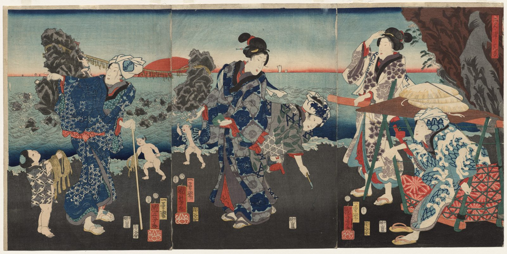

References / Illustration / 492
Kuniyoshi, Splendid View at Futamigaura Bay (triptych)
Three sheets form one beach scene: pilgrims and travellers at the Wedded Rocks near Ise, with the sun rising between the rocks, by Utagawa Kuniyoshi.
- Source
- Cleveland Museum of Art, 1943.10
- Creator
- Utagawa Kuniyoshi
- Made
- 1854
- Style
- Ukiyo-e (agent-proposed, not yet reviewed by a person)
- Moods
- Lively, narrative, bold
- Evidence
- Downloaded and inspected the Cleveland Museum of Art print image of the joined triptych 1943.10 (3400 × 1707 px, viewed at 1600 × 803).
- Reviewed
- Rights
- Open license, stored. License: CC0-1.0. Rights policy
Context
Cleveland catalogues the work as a triptych of color woodblock prints, each sheet 36.9 × 25.4 cm, 1854. CMA 1943.10.
Cleveland describes a continuous scene of visitors at Futamigaura Bay near Ise Grand Shrine, with the sun rising between the Wedded Rocks joined by a shimenawa rope. CMA.
Observed
- Three vertical sheets join edge to edge. The figures continue across the joins.
- The sky is pale blue with a dark Prussian-blue band at the top and a pink-red glow at the horizon. A flat red sun sits between two dark rocks at left.
- The sea is pale blue-green with white wave crests outlined in blue. The beach in the foreground is flat dark gray-black.
- Robes carry dense patterns in indigo, gray, red, and white: flowers, checks, and wave shapes.
- Red and yellow signature cartouches with seals stand on the dark beach under each sheet’s figures. A red title cartouche is at upper right.
- A dark brown cliff at right is cut by the top and right edges.
Why it belongs
By 1854 the palette is denser and more saturated than in Harunobu’s or Utamaro’s prints, but the devices are the same: outline, flat ground, bokashi sky, and cartouches.
The triptych shows that the style composes across panels without a gutter break.
Borrow
Run one scene across three equal panels and let figures cross the joins.
Use a dark flat foreground band under busy patterned figures to make them read.
Measured
Machine-extracted by tools/image-traits.py on . Full measurement.
- Mean chroma
- 0.09
- Palette
- #8f9b8d 13%
- #484540 13%
- #38332f 10%
- #c7b69a 5%
- #d5c3a6 5%
- #656058 4%
- #f4f0e5 4%
- #726e65 4%



share_license_status: CC0 for this object. Kuniyoshi died in 1861, so the work is public domain in Japan and the United States. License: CC0-1.0. Open the image for full size.